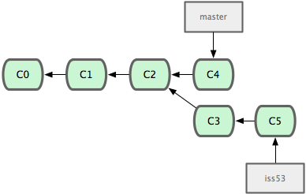

Introduction
Cette partie du tutoriel présente les objetifs, décrit le principe des systèmes de gestion de version, l'installation et la configuration de git.
Objectifs de la présentation
A la fin de la présentation vous- Saurez ce que sont les systèmes de gestions de versions (Concurrent Version System en anglais)
- Pourrez installer et configurer le système de gestion de version Git
- Connaitrez les commandes de bases pour une utilisation quotidienne de Git
- Aurez la possibilté de travailler de manière flexible à l'aide des branches
- Ne serez pas perdu avec la cheat sheet et les pointeurs que nous vous fournissons
Systèmes de gestions de versions : vocabulaire
Un logiciel de gestion de versions (VCS en anglais) permet de stocker les différentes versions d'un ensemble de fichiers afin de faciliter l'évolutivité d'une production informatique. Par la suite nous utiliserons l'abbréviation VCS pour désigner les logiciels de gestions de versions. Certains termes sont spécifiques au monde des VCS ou à GIT et il est important de bien les comprendre pour pouvoir travailler efficacement :
Commit et branche
Le mot commit désigne à la fois la création d'une nouvelle version (lorsque c'est un verbre) et cette nouvelle version (lorsque c'est un nom). "Je commit" veut dire, j'enterrine les changements que j'ai effectué et ils constituent une version. "Le deuxième commit de mon projet", désigne sa deuxième version. Les commits sont organisés en arbre et la figure suivante en donne un exemple :
 Source : progit.orgC0...C5 désignent des versions. Les flèches représentent des liens de parentés, entendons par là que C1 a été créé à partir de C0, C1 est postérieur à C0. Au niveau de C2 le dévelopement s'est divisé en deux branches : master et iss53. Ces branches correspondent à la notion intuitive d'une branche d'un arbre par exemple: la branche master va de C0 à C4. Ne prenez pas garde à la notation adoptée pour les branches, elle sera expliquée par la suite.
Dépot (Repository)
Désigne l'ensemble des fichiers conservés par le système de gestion de version.
Remote
Désigne un dépot distant (par opposition à un dépot local).
Systèmes de gestions de versions : architecture
Le système de gestion de versions se déclinent en trois types :- Local : le dépot se situe uniquement sur la machine de l'utilisateur
- Centralisé : les informations se situent sur un serveur central. L'information y est principalement située et le ou les utiisateurs doivent s'y connecter pour travailler
- Distribué : les informations sont stockées sur un ensemble de machines de manièe distribuée. On peut reconstituer le contenu du projet à partir de n'importe quelle machine, il n'y a pas un point de faiblesse comme dans le cas de l'architecture centralisée.
Git : appercu des possibilités
Vous commencez certainement à deviner le fonctionnement des système de gestion de version, voici une partie des avantages qu'apporte Git aux développeurs :- Possibilité de revenir en arrière dans le développement
- Possibilité de travailler en parallèle
- Possibilité de travailler uniquement en local(par exemple sans internet) et de transmettre toutes les informations dans un second temps
- Possibilité de débugger automatiquement pour localiser l'introduction d'un bug parmis l'arbre des commits
- ...
Installer Git
Sous ubuntu ou debian il vous suffit d'installer le paquet git pour pouvoir disposer de toutes les fonctionnalités du logiciel.sudo apt-get install git
Sous mac os X 10.6 git est déjà présent de base dans le système.
Configurer Git
Git se configure soit en ligne de commande, soit directement dans un fichier de config qui se trouve dans votre home : .gitconfig. En voici un exemple :
[user]
name = Laurent Charignon
email = laurent.charignon@telecom-paristech.fr
[core]
editor = vim
[alias]
co = checkout
br = branch
st = status
a = add
Ici il faut comprendre que mon nom et mon email sont spécifiés, que j'utilise vim et que j'utilise des alias pour quatre commandes.
Pour modifier ce fichier par le biais de la ligne de commande on utilise la commande git config avec la syntaxe suivance :
git config --global categorie.champ valeur
par exemple :
git config --global user.name "Laurent Charignon"
L'option --global permet de faire que le choix s'applique à tous les projets que l'on utilise. Si vous voulez faire des configurations spécifiques à un projet vous pouvez retirer cette option.
man git config fournit une liste de toutes les options configurables avec la syntaxe mentionnée ci-dessus.
Interface graphique pour visualiser les branches
Vous pouvez utiliser différentes interfaces graphiques pour visualiser l'arbre des commits. En voici deux exemples :
gitk et son interface Tk : qgit et son interface Qt :